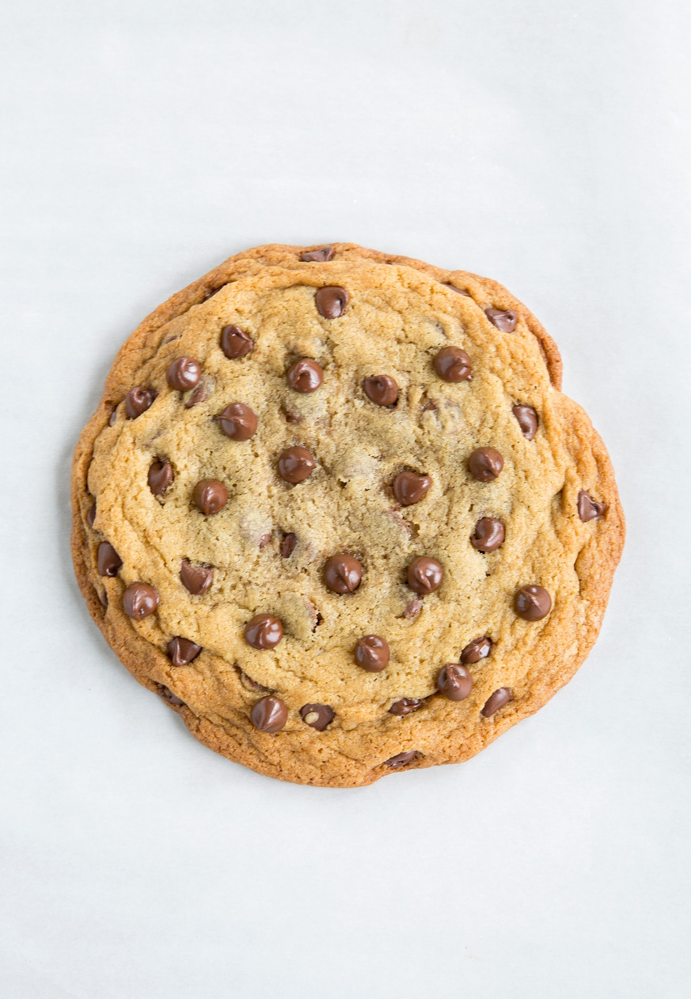
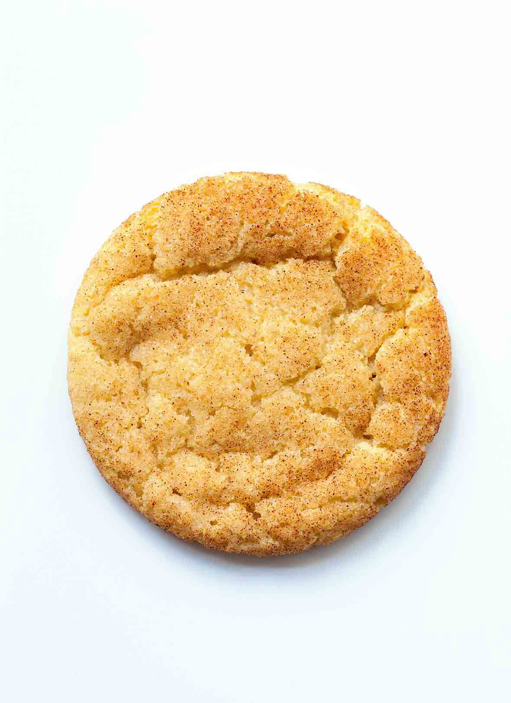

Assignment 5

Chocolate Chip Cookies

Snickerdoodle Cookies
Choclate Chip Cookies
- 1 cup butter, softened
- 1 cup white sugar
- 1 cup packed brown sugar
- 2 eggs
- 2 teaspoons vanilla extract
- 1 teaspoon baking soda
- 2 teaspoons hot water
- ½ teaspoon salt
- 3 cups all-purpose flour
- 2 cups semisweet chocolate chips
- 1 cup chopped walnuts
- Preheat oven to 350 degrees F (175 degrees C).
- Cream together the butter, white sugar, and brown sugar until
smooth. Beat in the eggs one at a time, then stir in the vanilla.
Dissolve baking soda in hot water. Add to batter along with salt.
Stir in flour, chocolate chips, and nuts. Drop by large spoonfuls
onto ungreased pans.
- Bake for about 10 minutes in the preheated oven, or until edges
are nicely browned.
Snickerdoodle Cookies
- 1 cup Unsalted Butter (softened)
- 1 1/2 cups Sugar
- 2 large Eggs
- 2 teaspoons Vanilla
- 2 3/4 cup Flour
- 1 1/2 teaspoon Cream of Tartar
- 1/2 teaspoon Baking Soda
- 1 teaspoon Salt
- Preheat oven to 350 degrees.
- In a large mixing bowl, cream butter and sugar for 4-5 minutes
until light and fluffy. Scrape the sides of the bowl and add
the eggs and vanilla. Cream for 1-2 minutes longer.
- Stir in flour, cream of tartar, baking soda, and salt, just
until combined.
- In a small bowl, stir together sugar and cinnamon.
- If time allows, wrap the dough and let refrigerate for 20-30
minutes. Roll into small balls until round and smooth. Drop into
the cinnamon-sugar mixture and coat well. Using a spoon, coat for
a second time, ensuring the cookie balls are completely covered.
*To make flatter snickerdoodles, press down in the center of the
ball before placing in the oven. This helps to keep them from puffing
up in the middle.*
- Place on a parchment paper-lined baking sheet. Bake for 9-11
minutes. Let cool for several minutes on baking sheet before
removing from the pan.